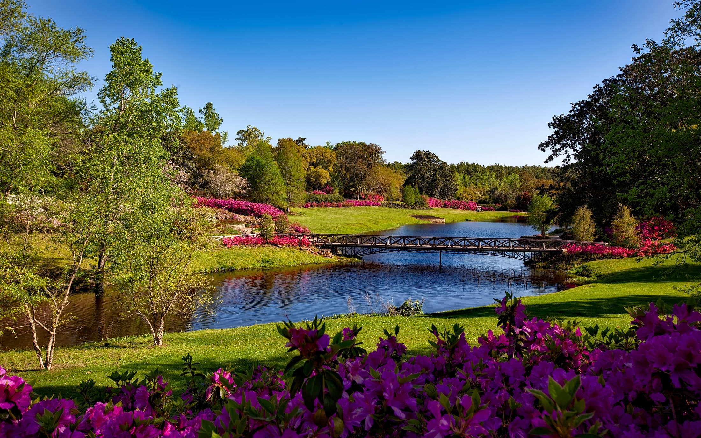
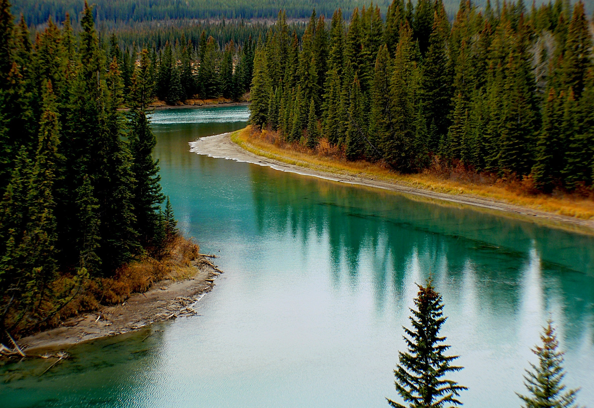

"Water is Pure"
A river is a ribbon-like body of water that flows downhill from the force of gravity. A river can be wide and deep, or shallow enough for a person to wade across.

Some rivers flow year-round, while others flow only during certain seasons or when there has been a lot of rain. The largest rivers can be thousands of miles long. The erosional power of rivers can form geologic wonders like the Grand Canyon.
All rivers have a starting point where water begins its flow. This source is called a headwater. The headwater can come from rainfall or snowmelt in mountains, but it can also bubble up from groundwater or form at the edge of a lake or large pond. The other end of a river is called its mouth, where water empties into a larger body of water, such as a lake or ocean.

The water that flows in rivers is fresh, meaning that it contains less than one percent salt. However, rivers still carry and distribute important salts and nutrients to support plant and animal life. For this reason, some of the most biodiverse habitats on our planet can be found around rivers.
This site is a gallery of different bodies of water.